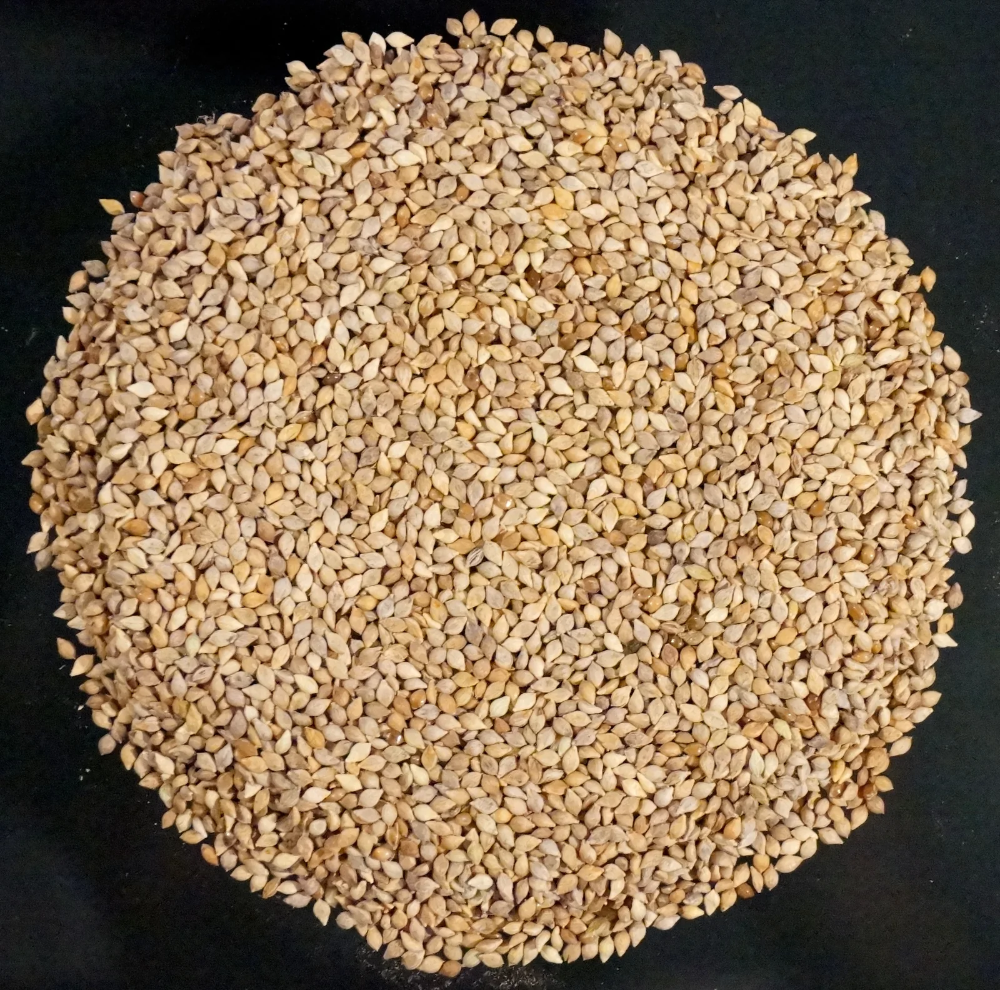
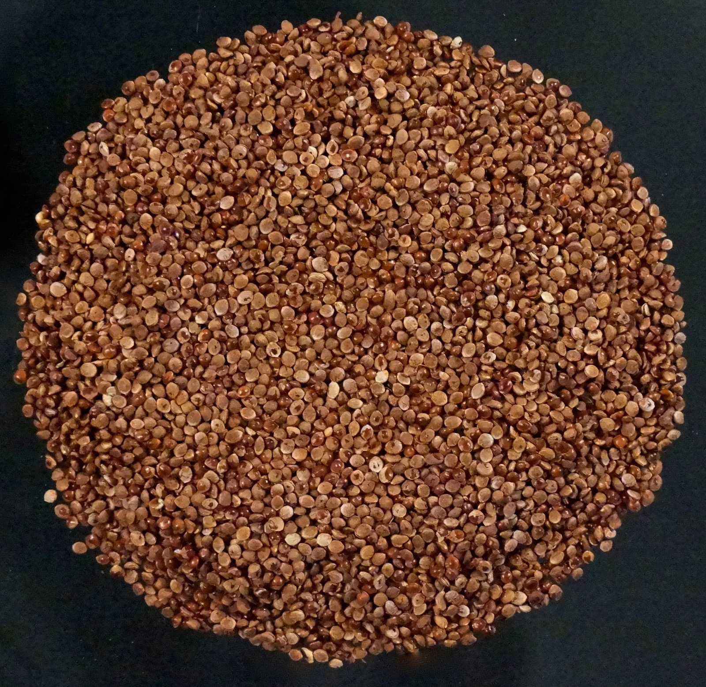
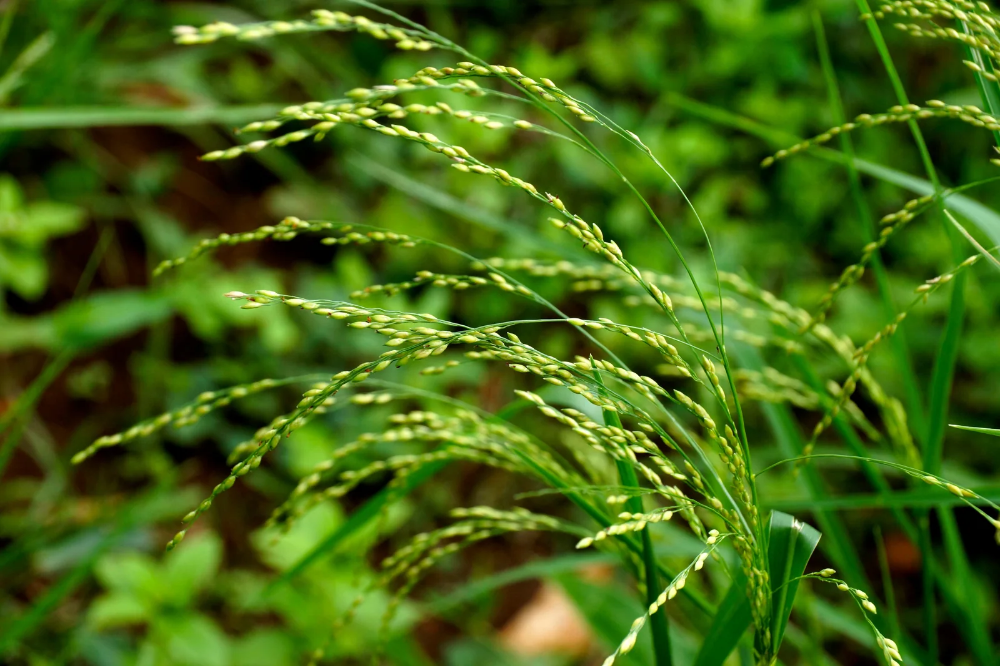
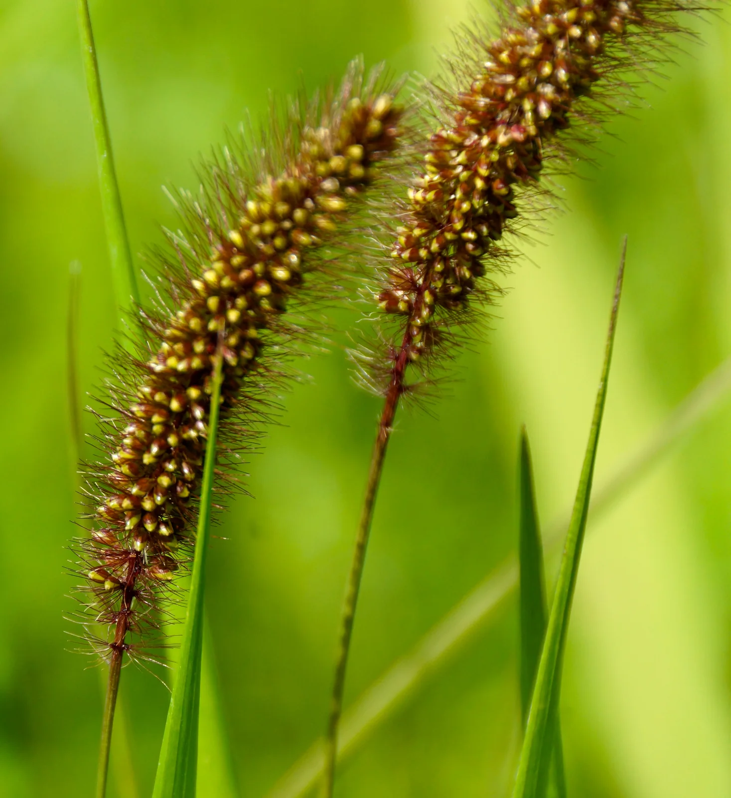

Trusted since 2016
Foxtail millet
Browntop millet
Barnyard millet
Kodo millet
Little millet
De-husked unpolished organic high quality whole grain millets

Historically 'SIRI DHANYA MILLETS' were used as staple food since last 8,000 years in India, China, America, Iran, Japan, Italy, Turkey, South Africa, Ethiopia and Greece. In every civilization of the world, humans first cultivated only these ‘SIRI DHANYA MILLETS’.
Famous scientist Dr.Khadar’s (refer youtube for his 100s of Videos) relentless efforts and research have revealed to us that ‘Siri Dhanya Millets’ can play a major role in protecting and treating people suffering from Rheumatism, Diabetes, Constipation, Fat accumulation, Hypertension, Triglycerides, high Cholesterol, convulsions in children, Cancers and Gangrene. These grains are also useful in rejuvenating Bone marrow, blood cleansing, improving efficiency of Thyroid, Liver, Pancreas, Brain, digestion, curing of Pcod in women, improving male and female reproductive health etc. Thousands of patients have benefitted from these grains. Lakhs of families are now eating ‘SIRI DHANYA’ millets as staple food.

BENEFITS OF MILLET ZONE
SIRIDHANYA MILLETS
HIGH FIBRE CONTENT (8 - 12.5% )
FIGHT DIABETES
LOW GLYCEMIC INDEX
GLUTEN FREE & ANTIOXIDANTS
ALKALIZING & ANTI-CANCER
SLOW AND EASY DIGESTION
IRON, CALCIUM, POTTASIUM, PHOSPHORUS, MAGNESIUM & ZINC
PHYTOCHEMICALS
BONE STRENGTH
DETOXIFYING
BETTER CARDIO-VASCULAR HEALTH
BETTER REPRODUCTIVE HEALTH
CONTAIN ESSENTIAL AMINO ACIDs, FATTY ACIDS & VITAMIN E
Suitable for all age groups



Why Siridhanya millets ?
The true Fiber content in Rice and processed hybrid wheat foods are 0.25 to 1.0 % only. All these foods, very quickly, within 15-35 minutes release large quantities of Glucose that enters our blood stream quickly, thereby creating unnatural circumstances leading to illnesses.
That is why today, MILLET ZONE's ‘SIRI DHANYA’ millets which can be compared to the ‘Mother’s Love’ need to be re-inducted in to our foods. We cultivate these crops without involvement of any chemicals.
These MILLETS have amazing 8 to 12.5% fiber and release Glucose for 5 to 7 hours slowly and in small quantities. They keep a human energetic throughout the day. For both healthy and diseased people, 'SIRIDHANYA' are Nature's gift.
Today as our life styles changed, as we do less of physical work, as pollution increased and as we use more of polished Rice, hybrid wheat, chemicals laden meat, maida, refined oils, burger, pizza, bread, biscuits , chocolates, noodles, ice creams, sweets, cooldrinks, pesticide laden vegetables, Mercury laden fish, many chronic diseases have evolved. The diverse local food customs have been gradually replaced by mono culture of --everyone eating Rice, wheat and meat as their basic food.
IMPORTANCE OF Millet Zone's UNPOLISHED MILLETS
How to effectively consume Siri Dhanya millets ?
It is very clear that Siri Dhanya (5 special millets) can be consumed as Rice (Presoak for 5 hr to 8 hrs, cook like Paddy Rice with 1:2 water in a cooker or at 1:5 in open vessel). You can also make Flat Roti /Flat Bread, Idly, Pongal, Upma, Dosa, Puligare, Biriyani or Bisibellebath using Siri Dhanya and consume them as Breakfast, Lunch & Dinner. IMPORTANT ASPECT is to eat them right. 1) Eat same Siri Dhanya Millet on one day for Breakfast, lunch and dinner. WHY? When you eat a Siri Dhanya all the 3 times a day, (Probably 40 grams, 100 grams and 90 grams) you will get your daily dose of 20 to 24 grams of Dietary fibre from your staple food alone. As science tells us to consume 38 grams of fibre which is embedded in your food, the rest of 10-14 grams, you may try to get from vegetables, fruits and nuts. Also, you are giving that Siri Dhanya ample scope to correct your 'system' that needs to be corrected for that 24 hrs. It is because, each Siridhanya is capable of acting on certain systems of your body, giving it a full day to heal, is justified. Eg; Little millet acts on your Reproductive system. This automatically conveys : a) Do not mix Siri Dhanya and cook and eat. b) Do not eat one Siridhanya for Lunch and another for Dinner. When you are fighting a particular disease, for ex: gangrene in a diabetic foot, Kodo Millet is highly recommended for its blood cleansing properties. Then, eat 3 to 7 days of Kodo Millet (For all 3 meals a day) and then circulate other Siridhanya 1 per day and come back to the main one until you see positive results. If it is for Diabetes type 2, you may eat all 5 Siri Dhanya; 1 each for 2 days in a cyclical manner & repeat the cycles. OR Little Millet focuses on your ductless glands, Thyroid and Pancreas. So you may eat it for 2 days continuously and rest of the 4 millets, 1 per day. For skin diseases, certain Siridhanya are more recommended along with others. similarly for Asthma, similarly for certain Cancers, similarly for recovering from PCOd, recent illnesses like Jaundice, Dengue, Typhoid and viral fevers etc. Best wishes from Millet Zone.

Write to mysirilokam@gmail.com for a free PDF copy of Various books like SIRI JEEVANA MARGA, AMBALI, Leaves & Kashayas & SIRILOKAM.
Links from this page
Content captured 25 October 2026. Reorganized for reading; purchase-related material excluded.